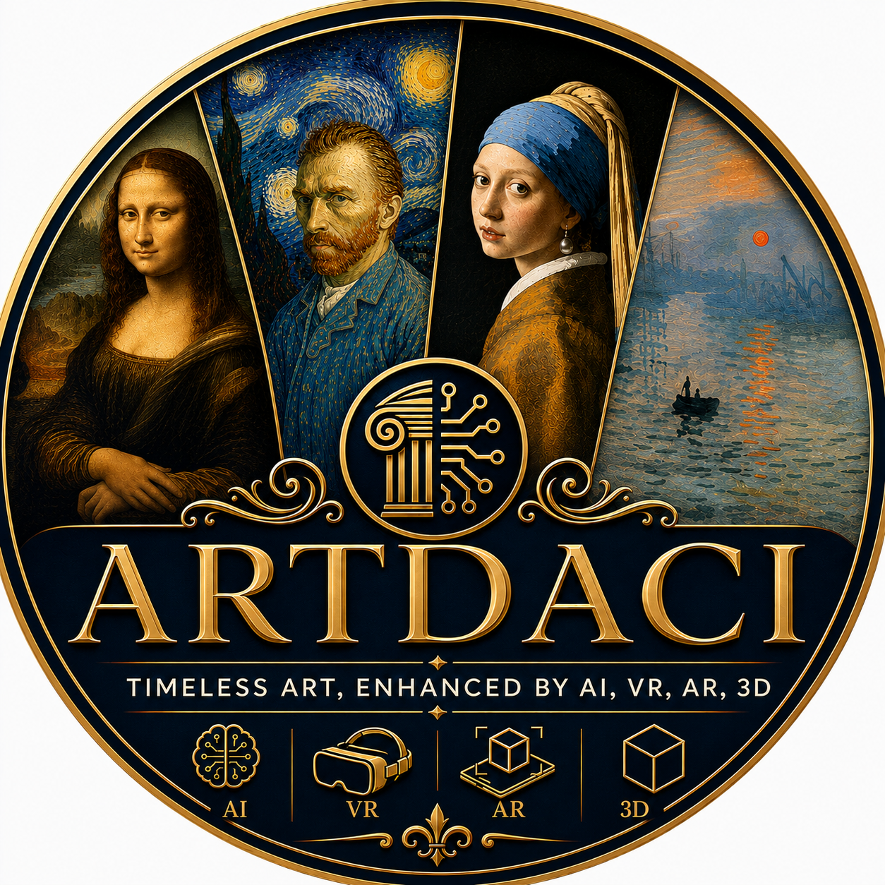

ARTDACI · Interactive 3D
Rotate, inspect and explore selected ARTDACI models—from artwork interpretations and artist figures to the living book and museum architecture.
Only one model is loaded at a time. Select any item below to replace the model in the viewer. AR is offered when supported by the device and browser.